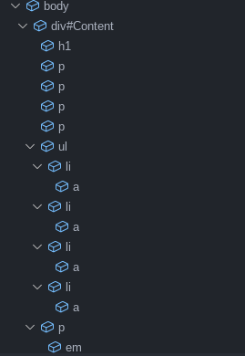

If you want to be a "true" coder and boost your productivity, you'll have to learn all about VS Code.
We touched on this a bit in the last lesson, but I'll bet this strange new program is still confusing for you, unless you've done this kind of thing before. Even if you are a seasoned VS Code expert, but you're just new to HTML, I'l recommend you still read this part, but you can skip over some of the generic stuff since we'll be talking about HTML specific stuff too like Emmet.
So first let's talk about customization. VS Code has so many ways to make it feel like yours. You already installed the Live Server extension, but there are tons of other extensions on the marketplace. You can find the marketplace by clicking on the extensions icon on the side bar. Here you can search for any extension or theme that your hear desires.
Here's a couple that I recommend:
If you can't find any themes you like, or you're just really dedicated, you can make your own at this website
With that out of the way, let's learn some tricks.
This isn't something I use a ton, but it's still pretty neat. On the left panel where you see all the files (make sure you've switched back to the main file icon on the sidebar) there should be a tab called "outline". Here you'll find a list of all your nested tags, and you can jump to one at any time. This is great for super complex documents.
Similarly, the bar underneath your current open file tab has a list of nested folders and elements that you can click on to jump to them.
Most text editors have find and replace, including VS Code. You can search for something in your current document by pressing ctrl+f for find. You can then use the dropdown to replace all of those results with another string.
But what if you want to search every document in your workspace (opened folder)? To do that, you first must make sure you have an entire workspace open and not just a file. Go to file > open folder to fix this. Then click the magnifying class on the side bar. This feature is similar to searching in just your document, but it will search in ALL documents in the folder which is a lifesaver.
In VS Code you can create files and folders in your workspace without leaving the app! Simply hover over the title of your workspace (folder) in the file view and click the file with a plus to create a new file in the parent directory of the file you're editing, or the folder you've selected. Type the name of the file (with the extension) and then press enter. You can do something similar with folders. However if I have three folders and they're all empty except for the next folder, VS Code will display them like folder/folder/folder in one go instead of a bunch of nested empty folders.
On the very right side of your window is a code minimap. This is a tiny version of your code that's useful for navigating super long documents. It's not super useful for basic files, but it can come in handy for large ones. You can click on an area of the minimap to scroll to that location in the actual document.
This is a big one, and it could even be it's own lesson. Emmet is a built-in VS Code tool that helps you write HTML much faster. Fireship explains the basics way better than I could in less than a minute with this YouTube short. But here's the basics:
Check back later for new lessons!